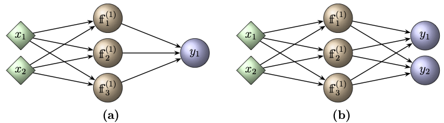
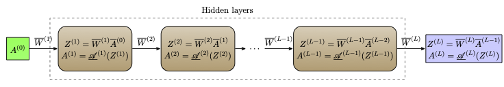

Chapter 4: Network and Gradient Evaluation
In the last two chapters, we have studied models based on single neurons and observed the limitations in their applicability and expressivity. This clearly motivates the use of an artificial neural network as a model, especially when dealing with high-dimensional datasets involving more complex features. Our next task is, therefore, to understand the technique of training a multilayer perceptron (MLP).As mentioned in Section 1.4, training or learning an MLP means obtaining suitable parameters \(\boldsymbol{\Theta}\) involved in defining the neural network function \({\mathscr{F}_{L,\hat{n}}}(\cdot\,; \boldsymbol{\Theta})\). The learning needs a suitably chosen cost function that is minimized using a gradient-based optimization method to obtain the parameters. To this end, we need to compute the gradient of the cost function, which uses the quantities generated while evaluating the neural network function at a given feature.
Recall from Chapter 1 that we have defined an MLP as a composition of layers of affine and activation functions (see Remark 1.1). A convenient and computationally efficient way of evaluating the neural network function at a feature \(\boldsymbol{x}\) is to consider each layer function in matrix form. The gradients are evaluated following the backpropagation technique. The purpose of this chapter is to set the matrix notation for the neural network function and understand the evaluation of the gradients of a cost function with respect to the parameters using repeated application of the chain rule across the layers.
The evaluation of a neural network function at a batch of features, given the set of parameters, is referred to as a batch forward propagation and is detailed in Section 4.1. The backpropagation method for gradient computation is detailed in Section 4.2.
4.1 Matrix Formulation and Forward Propagation
From Definition 1.2, we see that an ANN is defined as a composition of layers, where each layer applies an affine transformation followed by a nonlinear activation function. In this section, we first give matrix form of a neural network function and then discuss the batch forward propagation.4.1.1 Layer Function in Matrix Form
In order to keep the notations clear and simple we use a shallow network with one hidden layer, that is, \(L=2\).Let the network dimensions be \(n_0, n_1, n_2\in \mathbb{N}\). From Definition 1.2, a shallow network with width \(\hat{n}=n_1\) is a function \({\mathscr{F}_{2,\hat{n}}}:\mathbb{R}^{n_0}\rightarrow \mathbb{R}^{n_2}\) given by
The augmented weight matrices are given by
for \(l=1,2\). We also write
From Definition 1.1, the \(k^{\rm th}\) neuron of the \(l^{\rm th}\) layer is given by
For \(l=1\), \(\boldsymbol{x}^{(0)} = \boldsymbol{x}\in \mathbb{R}^{n_0}\) is the input vector, and \(\boldsymbol{x}^{(1)}\in \mathbb{R}^{n_1}\) is the output of the first layer given by
where \(\boldsymbol{x}^{(l-1)}\in \mathbb{R}^{n_{l-1}}\) is the activation of the \((l-1)^{\rm st}\) layer, \(\boldsymbol{b}^{(l)}\in \mathbb{R}^{n_l}\) is the bias vector, and \(W^{(l)}\) is the \(n_l\times n_{l-1}\) weight matrix of the \(l^{\rm th}\) layer.
For a given activation function \(\mathscr{A}^{(l)}: \mathbb{R}\rightarrow \mathbb{R}\), we define the coordinatewise activation \(\underset{\overline{~~~~}}{\mathscr{A}}^{(l)}:\mathbb{R}^{n_l}\rightarrow \mathbb{R}^{n_l}\) as
Thus, the activation of the \(l^{\rm th}\) hidden layer is the vector \(\boldsymbol{x}^{(l)}\in \mathbb{R}^{n_l}\) given by

Figure 4.1: Schematic of single layer neural networks. (a) A real-valued neural network \({\mathscr{F}_{2,3}}:\mathbb{R}^2\rightarrow \mathbb{R}\); (b) A vector-valued network \({\mathscr{F}_{2,3}}:\mathbb{R}^2\rightarrow \mathbb{R}^2\).
Let us write the explicit form of the ANN shown in Figure 4.1(a). The input layer has two features, i.e., \(n_0=2\). There are two layers with the hidden layer having \(n_1=3\) neurons. Thus, the depth of the network is 2 and the width is 3. Therefore, the ANN is the function \({\mathscr{F}_{2,3}}:\mathbb{R}^2\rightarrow \mathbb{R}\) with the trainable parameter
The affine function of the first layer is
The activation \(\boldsymbol{x}^{(1)}\) of the hidden layer is now obtained by applying the activation function \(\mathscr{A}^{(1)}\) of the first hidden layer on the above vector coordinatewise to get
Taking \(\boldsymbol{x}^{(1)}\) as the input, the output is then computed at the output layer as
for every input vector \( \boldsymbol{x}^{(0)}\in \mathbb{R}^{2}\).
4.1.2 Forward Propagation
The shallow network computations described in the previous subsection can be generalized to neural networks of arbitrary depth.For fixed parameters \(\boldsymbol{\Theta}\), the network function \({\mathscr{F}_{L,\hat{n}}}:\mathbb{R}^{n_0}\rightarrow \mathbb{R}^{n_L}\) is well-defined. For every input vector \(\boldsymbol{x}\in\mathbb{R}^{n_0}\), the final output \(\boldsymbol{y}={\mathscr{F}_{L,\hat{n}}}(\boldsymbol{x}; \boldsymbol{\Theta})\) is evaluated recursively by taking the output of the \((l-1)^{\rm st}\) layer as the input to the \(l^{\rm th}\) layer, and computing
4.1.2.1 The Batch Form
Given a datasetTo gain computational efficiency, it is preferable to perform forward propagation on the entire dataset in matrix form, rather than evaluating the ANN separately for each input vector.
Then the affine function takes the form
Apply the activation function \(\underset{\overline{~~~~}}{\mathscr{A}}^{(1)}\) to get the activation matrix of the first layer as
The choice of the activation functions at the output layer depends on the purpose of the neural network. If the network is used for regression or function approximation, then the activation function at each neuron of the output layer is the identity map and hence \(\underset{\overline{~~~~}}{\mathscr{A}}^{(L)}\) denotes the componentwise identity activation.
On the other hand, if the neural network has a multi-class classification, then the activation function at the output layer is a softmax function \(\texttt{sm}\) introduced in Subsection 1.3.6. In this case, the notation \(\underset{\overline{~~~~}}{\mathscr{A}}^{(L)}\) should not be taken as an activation function applied componentwise, rather it is a vector valued softmax function.
Input:
- Given the trainable parameters
\[\boldsymbol{\Theta} = \big( \overline{W}^{(1)}, \overline{W}^{(2)}, \cdots, \overline{W}^{(L)} \big)\]
- Given the dataset in the form of a \(n_0\times N\) matrix \( A^{(0)}. \)
For each layer \(l=1,2,\ldots, L\), perform the following computation:
- Augment the activation \(A^{(l-1)}\) matrix to obtain \(\overline{A}^{(l-1)}\).
- Perform the matrix multiplication
\[ Z^{(l)} = \overline{W}^{(l)}\,\overline{A}^{(l-1)} \]
- Apply the activation function to each element of the matrix \(Z^{(l)}\) as follows:
For \(i=1,2,\ldots, n_l\)
\(~~~~~~\)For \(j=1, 2, \ldots, N\)
\(~~~~~~~~~~~~A^{(l)}_{ij} = \mathscr{A}^{(l)}(Z^{(l)}_{ij}).\)

Figure 4.2: Visualization of batch forward propagation in a feedforward neural network, showing how the input passes through hidden layers to generate the final output.
- Understand the following Python code implementing the above forward propagation algorithm
BatchForwardPropagationDirectImplementation - Understand the following Python code that implements forward propagation using TensorFlow-Keras
BatchForwardPropagationTensorFlow-Keras - In the TensorFlow-Keras implementation of a feedforward neural network, the weights, biases, and batch input \(A^{(0)}\) are handled differently from the augmented matrix format used in the theoretical formulation.
- Describe how Keras stores the weight matrices and bias vectors for each layer, and compare this with the augmented weight matrix format \(\overline{W}^{(l)}\) we used in theory.
- Explain the difference between the batch input format of \(A^{(0)}\) in Keras (i.e., NumPy/TensorFlow arrays) and the format we used in the theoretical framework (column-wise arrangement of samples) as well as in the first code above.
- Understand the following Python code that implements forward propagation using PyTorch
BatchForwardPropagationPyTorch - State the shape of the weight and bias attributes of PyTorch. Determine whether the stored weight array agrees with \(W^{(l)}\) or with its transpose, and compare your answer with the Keras case of Question 3.
Observe that, at each layer, Algorithm 4.1 generates two matrices, namely, the pre-activation matrix \(Z^{(l)}\) and the activation matrix \(A^{(l)}\). Only the last activation \(A^{(L)}\) is required for evaluating the value of the network function. However, the intermediate matrices \(Z^{(l)}\) and \(A^{(l)}\), \(l=1,2,\ldots,L-1\), are needed for the evaluation of the gradient of the cost function as we see in the next section. For this reason, the intermediate quantities computed in the forward propagation algorithm have to be retained in memory.
Chapter to be continued ...